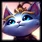

|  |
Yuumi is a simple and easy champion. I played most when I first started because of the shielding and poke she can do. As Yummi, you latch unto a friendly player and you can shield them and boosts thier dmg. |
Rakan is able to engange and dissengage well due to his movement abilities and his mid range knock up. He is able to play well in team fights as well as peel for adc. He is close range and has a passive shield in addition to his healing projectile making him a strong pick. |
|
|
Twitch is normal an ADC role but you can go river twitch support. By using the support item, you can roam all lanes to gain gold and steal jungles. Your goal is to snowball by getting gold from support item faster than the enemy support. The major drawback is the 1 v 2 bot lane where short adc's struggle the most. If you don't snowball then you are uselss the rest of the game. |
Renata is an all round support who can grapple, shield, and provide great crowd control. An important took in her kit is the ability to revive allies. However, this champ is bad for solo queue because your ADC may not be in sync with your revive skill. For example, all in with revive but ADC runs away when they are low instead of commiting because they did not consider her revive. |
||
|
Zoe's main role is mid laner. In support, you play for bubbles which sleep e nemy champs however, you struggle early. At level 6 you can become more agressive and have greater presure with bubble. Your goal is to provide poke. Unlike Mid lane, Zoe support is able to plave more wards which provide more vision for your bubble and ult combo unlike zoe mid. |
Pyke is a strong harraser support because he has fast mobiltiy, stuns, and a grapple. He can easily roam mid and bot providing pressure to both lanes. His ult is also strong because he can execute low health enemies while sharing the gold with his team. You want to kill steal with your ult which breaks all other support rules. |